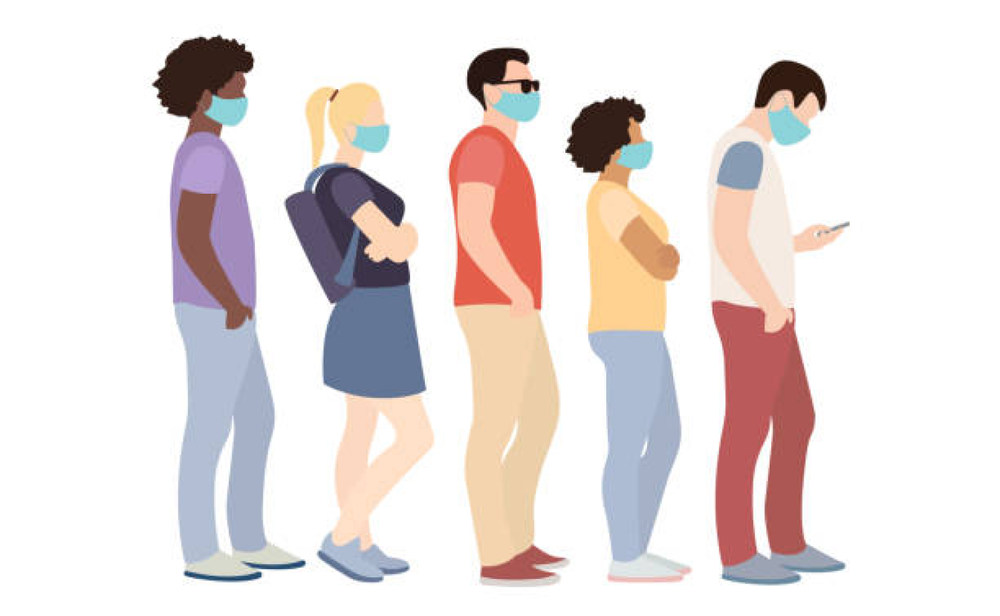
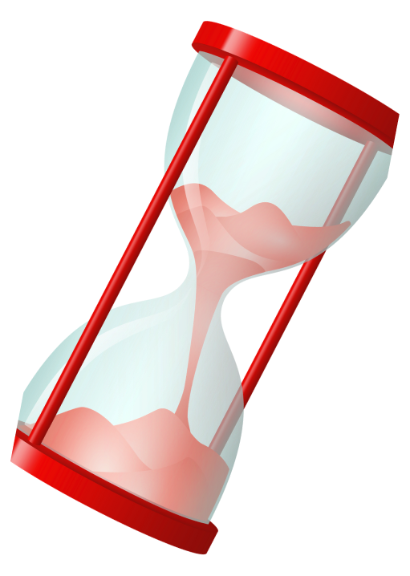
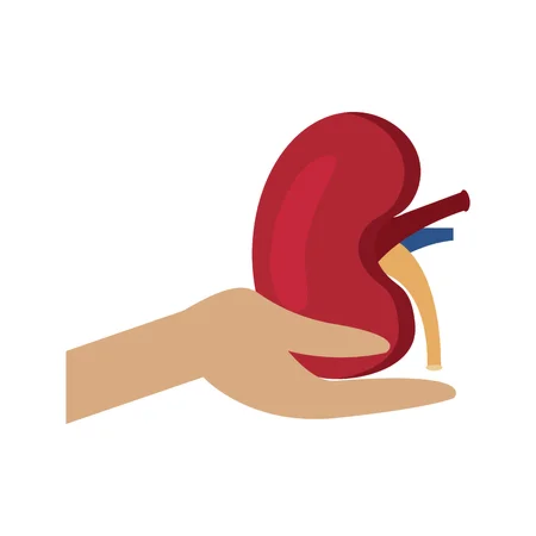
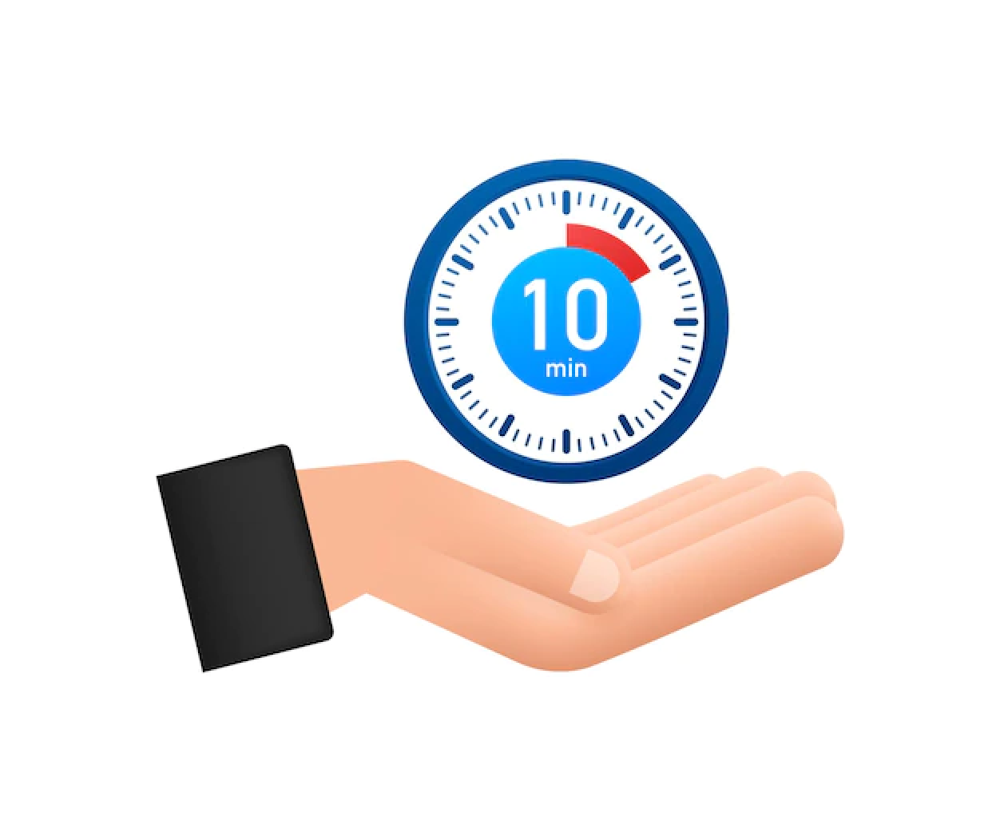

Home>>Learn About Donation>>Organ Donation Statistics
Organ Donation Statistics

104,234 Number of men, women,
and children are on the
waiting list.

people die each
day waiting for an
organ transplant.

Every donor can save 8
lives and enhance over 75
more. YOU can help.
42,000+ transplant were performed in 2022

Every 10 minutes another
person is added to the
transplant waiting list